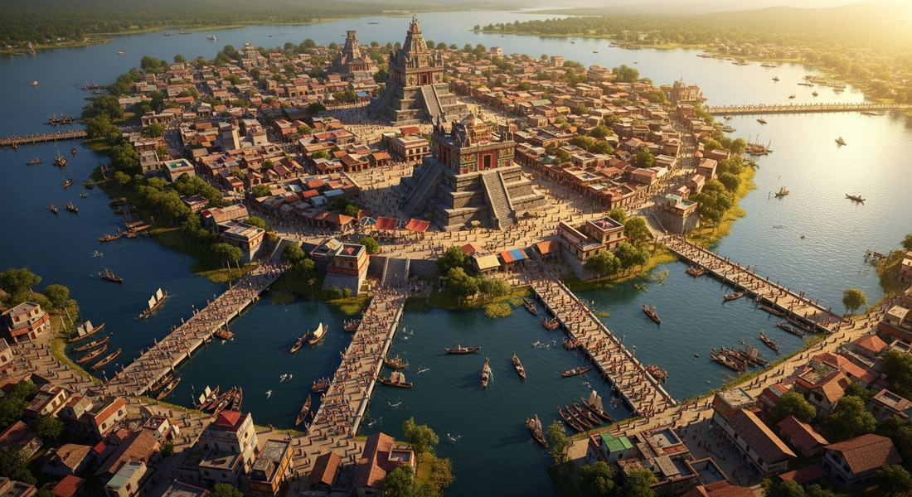
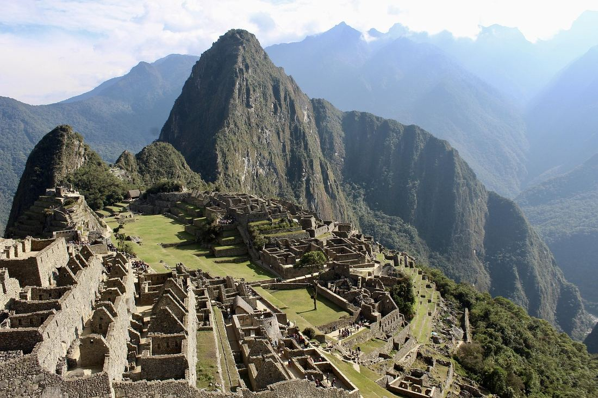

1.4 State Building in the Americas
- LO-A: The Mexica (Aztec) Empire: The Triple Alliance (Tenochtitlan, Texcoco, Tlacopan) built an empire in central Mexico through military conquest and tribute extraction. Tenochtitlan, built on a lake island, reached a population of 200,000+, making it one of the largest cities in the world. Human sacrifice was practiced at enormous scale as a religious-political obligation, the gods had sacrificed themselves to create the sun, and humans were obligated to sustain it through blood offerings. The Inca Empire (Tawantinsuyu): The largest pre-Columbian empire, stretching 2,500 miles along the Andes. Governed through an elaborate administrative system: the mit'a (labor tax), quipu (knotted strings for record-keeping without a writing system), and 25,000 miles of roads connecting the empire. The Inca ruler (Sapa Inca) was considered a son of the sun god Inti; deceased rulers were kept as mummies and participated in political life.
- LO-B: Explain how American civilizations used religion, tribute, and…: Maya city-states: The Classic Maya collapse (800–900 CE) preceded this period, but the post-Classic Maya persisted in the Yucatán Peninsula with centers like Chichén Itzá and Uxmal. Maya intellectual achievements included one of the world's only independent writing systems, an extraordinarily accurate astronomical calendar, and advanced mathematical concepts including the number zero.
- LO-C: Explain how American civilizations' development in isolation from…: North American complexity: Cahokia: Cahokia (near present-day St. Louis) was the largest pre-Columbian city north of Mexico, with a population of perhaps 10,000–20,000 at its peak (c. 1050–1200 CE). Its Monk's Mound is larger at its base than the Great Pyramid of Giza. Cahokia demonstrates that complex, urban civilization existed across North America, the continent was not "empty" before European arrival.
Try each question before revealing the answer.
1. The Americas developed complex civilizations, including monumental architecture, astronomical calendars, urban centers, and sophisticated governance, in complete isolation from Afro-Eurasia. What does this demonstrate about human historical development?
2. The Mexica practiced human sacrifice at enormous scale. European observers and many later historians viewed this as evidence of a "barbaric" culture. How should historians analyze the practice within its cultural context?
3. The Inca Empire governed a 2,500-mile territory without a writing system, wheels, or iron tools. What does this suggest about the relationship between specific technologies and state capacity?
4. Both the Mexica tribute system and the Inca mit'a represent different approaches to extracting resources from subject populations. What are the key differences between these two systems?
5. Cahokia (near present-day St. Louis) was one of the largest cities in North America before European contact, yet it is rarely discussed in popular history. Why might the pre-Columbian history of North America be systematically underrepresented in historical narratives?
- Explain how and why states in the Americas were established, expanded, and maintained
- Explain how American civilizations used religion, tribute, and labor systems to exercise political power
- Explain how American civilizations' development in isolation from Afro-Eurasia is historically significant
Tap a term for its definition.
-
Definition: The people who founded Tenochtitlan (present-day Mexico City) c. 1325 CE and built the Triple Alliance empire; often called "Aztec" though they called themselves Mexica. Significance: Built one of the largest cities in the world (Tenochtitlan, pop. 200,000+) and an empire extracting tribute from perhaps 5–6 million people across central Mexico; encountered and conquered by Hernán Cortés 1519–1521.
-
Definition: The political alliance between Tenochtitlan, Texcoco, and Tlacopan (c. 1427) that formed the foundation of the Mexica Empire. Significance: Pooled the military resources of three city-states to rapidly expand Mexica power across central Mexico; Tenochtitlan eventually dominated the alliance, receiving the largest share of tribute from conquered peoples.
-
Definition: The Inca labor tax system in which adult male subjects owed the state a period of labor service each year, deployed in building roads, temples, terraced fields, and military service. Significance: The primary mechanism through which the Inca built their enormous infrastructure (25,000 miles of roads) and filled state warehouses; distinguished from slavery by the state's obligation to feed, clothe, and house workers during their service.
-
Definition: A recording device used by the Inca consisting of knotted colored strings; capable of encoding numerical information and possibly narrative content. Significance: Allowed the Inca to manage a vast empire's census, tax, and administrative records without a conventional writing system; demonstrates that complex information management can take non-alphabetic forms.
-
Definition: Quechua (Inca language) name for the Inca Empire, meaning "the four regions" or "Land of the Four Quarters." Significance: The largest pre-Columbian empire in the Americas, stretching ~2,500 miles along the Andes from present-day Colombia to Chile; governed a population of perhaps 10–12 million people at its height.
-
Definition: The title of the Inca ruler, meaning "Unique Inca" or "Only Inca"; considered a son (or manifestation) of the sun god Inti and owner of all land in Tawantinsuyu. Significance: The Sapa Inca's divine status was the foundation of Inca political legitimacy; his authority extended over all aspects of Andean life. Deceased Sapa Incas were mummified and continued to participate in political and religious ceremonies as "living" rulers.
-
Definition: A major Mississippian mound-building city near present-day St. Louis, Illinois; at its peak (c. 1050–1200 CE) home to an estimated 10,000–20,000 people. Significance: The largest pre-Columbian city north of Mexico; its Monk's Mound has a larger base than the Great Pyramid at Giza; center of a trade network exchanging copper, shells, and obsidian across hundreds of miles. Demonstrates complex urban civilization existed throughout pre-Columbian North America.
-
Definition: The political units of Maya civilization, autonomous city-states ruled by a k'uhul ajaw (divine lord), rather than a unified empire; post-Classic centers included Chichén Itzá, Uxmal, and Mayapán in the Yucatán. Significance: The Maya developed one of only five fully independent writing systems in world history; their calendar system was more accurate than the contemporary European Julian calendar; they calculated the length of the year to within minutes using only naked-eye astronomy.
The Mexica (Aztec) Empire: Tribute, Sacrifice, and Urban Power

A modern reconstruction of Tenochtitlan at its height, a city of 200,000+ people built on an island in Lake Texcoco, connected to the mainland by causeways and serviced by thousands of canoes. At the time of Spanish contact (1519), it was larger than any city in Europe. AI-generated illustration (Google Gemini, 2025), commercially licensed.
According to Mexica tradition, the gods told their wandering people to settle where they found an eagle perched on a cactus eating a serpent. Around 1325 CE, they found that sign on a swampy island in Lake Texcoco, an unlikely location that they transformed, through a century of engineering and political ambition, into Tenochtitlan: one of the largest cities in the world. By 1500 CE, Tenochtitlan's population exceeded 200,000, larger than any contemporary European city, sustained by a remarkable system of raised agricultural beds (chinampas) in the lake and an elaborate tribute system drawing resources from across central Mexico.
The political foundation of Mexica power was the Triple Alliance, a partnership among Tenochtitlan, Texcoco, and Tlacopan formed around 1427. This alliance rapidly expanded Mexica military dominance across central Mexico through a strategy of conquest followed by tribute extraction. Conquered peoples were not fully incorporated into a unified imperial administration; instead, they were required to send regular tribute payments, maize, cacao, cloth, featherwork, gold, and sacrificial captives, to Tenochtitlan. Local rulers were typically left in place as long as they paid tribute reliably; those who rebelled were conquered again and subjected to harsher terms.
This tribute system funded Tenochtitlan's extraordinary urban complexity: its great temple (Templo Mayor), markets (the Tlatelolco market reportedly amazed Spanish conquistadors with its scale and organization), schools (calmecac for elites, telpochcalli for commoners), and bureaucracy. The city's water supply required aqueducts; its floating gardens (chinampas) required coordinated management of the lake environment. Tenochtitlan was a genuine metropolis, not a ceremonial center but a living, functioning city of extraordinary size and complexity.
Human sacrifice was central to Mexica religious and political life. The Mexica cosmological system held that the current world (the Fifth Sun) had been created when the gods sacrificed themselves, and that the sun required regular nourishment through human blood to continue moving across the sky. Without sacrifice, the sun would stop, the world would end. This was not mere ritual; it was experienced as a literal cosmic necessity. The scale of sacrifice increased dramatically with imperial expansion: the dedication of the expanded Templo Mayor in 1487 reportedly involved thousands of victims over several days. Sacrificial captives were the most prized form of tribute, and Mexica warriors measured their status by the number of captives they took.
The Inca Empire: Tawantinsuyu, the Land of Four Quarters

A section of the Inca road network near Machu Picchu, Peru. The Inca built over 25,000 miles of roads through some of the world's most challenging mountain terrain, without wheels or iron tools. Image credit not specified.
In the Andes Mountains of South America, the Inca Empire, which they called Tawantinsuyu ("Land of the Four Quarters"), built the largest pre-Columbian empire in the Americas. Stretching approximately 2,500 miles from present-day Colombia to Chile, and governing perhaps 10–12 million people, Tawantinsuyu was held together by one of the ancient world's most remarkable administrative systems.
The most visible achievement was the road network: over 25,000 miles of roads built through mountain terrain so rugged that wheeled vehicles (which the Inca did not use) would have been impractical anyway. Roads were engineered with drainage channels, stone pavements, rope suspension bridges over gorges, and carved steps through steep gradients. Along these roads, the Inca maintained a relay runner (chasqui) system capable of transmitting messages hundreds of miles per day, faster communication than most contemporary Old World states. Storehouses (qollqas) located along roads held food, cloth, and military supplies.
In place of writing, the Inca used the quipu, a device of colored, knotted strings that encoded numerical and possibly narrative information. Quipu specialists (quipucamayocs) maintained census records, tax accounts, and administrative data for the entire empire. The quipu demonstrates that complex information management can take forms entirely different from alphabetic writing, a reminder that "civilization" does not require any one specific technology.
The Inca extracted resources through the mit'a system, a labor tax rather than a goods tax. Adult male subjects owed the state a period of labor service each year, working on road construction, terrace farming, mining, military campaigns, or temple building. Crucially, during their mit'a service, workers were fed from state storehouses and provided with clothing and tools. This made the relationship more reciprocal than simple extraction: the state provided for workers during their service, and the storehouses' contents were also distributed during famines, a form of redistributive safety net that generated a degree of popular support for Inca rule.
Maya City-States: Post-Classic Persistence and Intellectual Achievement
The great Maya city-states of the Classic period (250–900 CE), Tikal, Palenque, Copan, had mostly collapsed by the time of our period (c. 1200–1450), leaving behind massive stone ruins in the jungle. Historians debate why: prolonged drought, warfare between city-states, and ecological exhaustion of agricultural land all likely contributed. But Maya civilization did not disappear. It persisted in a post-Classic form, particularly in the northern Yucatán Peninsula, with major centers at Chichén Itzá, Uxmal, and later Mayapán.
The intellectual achievements of Maya civilization are among the most remarkable of any pre-modern society:
- Writing: The Maya developed one of only five fully independent writing systems in world history, an advanced script combining logograms (symbols for words) and syllabic signs, capable of recording history, astronomy, ritual, and literature. Most Classic Maya texts were destroyed by Spanish missionaries in the 16th century; only four pre-Columbian Maya books (codices) survive.
- Mathematics: The Maya independently developed the concept of zero, one of mathematics' most significant insights, and used a vigesimal (base-20) number system for calculations.
- Astronomy and Calendar: Using only naked-eye observation, Maya astronomers calculated the length of the solar year to within minutes (more accurate than the contemporary European Julian calendar) and tracked the cycles of Venus with extraordinary precision. Their calendar system interlocked a 365-day solar calendar with a 260-day ritual calendar.
North American Complexity: Cahokia and Other Societies
The narrative of "civilization" in the Americas too often focuses exclusively on Mesoamerica and the Andes while neglecting the advanced societies of North America. Cahokia, located near the confluence of the Missouri and Mississippi rivers (near present-day St. Louis), was the largest pre-Columbian city north of Mexico. At its peak around 1050–1200 CE, Cahokia may have had 10,000–20,000 inhabitants, a size comparable to contemporary London.
Cahokia was a mound-building society: its most prominent feature, Monk's Mound, covers more ground at its base than the Great Pyramid of Giza, rising in four terraces to a height of about 100 feet. Cahokia was the center of a trade network that exchanged copper from the Great Lakes, marine shells from the Gulf Coast, and obsidian from the Rocky Mountain region across hundreds of miles, evidence of complex long-distance commercial connections throughout North America.
Other North American societies also displayed remarkable complexity. The Ancestral Puebloans (formerly called "Anasazi") built multi-story stone apartment complexes at Chaco Canyon and Mesa Verde that housed hundreds of people and required precise planning and construction. The Haudenosaunee (Iroquois Confederacy) in the Northeast were developing political institutions that some historians argue influenced the framers of the United States Constitution. The North American continent before European contact was not "empty" or "primitive". It hosted diverse, complex, and well-organized human communities.
These videos will help you review State Building in the Americas and solidify key concepts before your exam.
- The Inca state used redistribution of resources to generate popular loyalty and maintain political power
- The Inca economy was based primarily on long-distance trade with neighboring peoples
- The Inca mit'a system was equivalent to slavery because workers had no choice in their labor obligations
- The Inca storehouses were primarily used to support religious ceremonies and the priestly class
- The Mexica used religion to justify territorial expansion while the Inca used religion only for domestic social control
- The Mexica used large-scale public human sacrifice to demonstrate cosmic power, while the Inca centered religious authority on the Sapa Inca as a son of the sun god
- The Inca had a more sophisticated religious system than the Mexica because it did not require human sacrifice
- The Mexica religious system was polytheistic while the Inca worshipped a single deity
- The Inca developed a phonetic writing system that allowed them to record history and literature as well as numerical data
- The complexity of the quipu system limited its use to the capital Cusco and prevented effective provincial administration
- Inca officials used quipus exclusively for religious purposes, recording prayers and ritual calendars for priestly use
- Effective administration of a large empire requires standardized record-keeping systems, which the Inca achieved through non-alphabetic means
- Spanish military technology was so overwhelmingly superior that the Mexica could not have resisted even without internal opposition
- The fall of Tenochtitlan was primarily caused by epidemic disease that killed the majority of the Mexica population before Spanish forces arrived
- The Mexica tribute system generated resentment among subject peoples that ultimately undermined the empire's ability to resist external threat
- The Mexica Empire lacked the military capacity to defend itself, having relied entirely on tribute extraction rather than maintaining a standing army
- The Mexica's agricultural system was less productive than contemporary systems in China and the Islamic world, limiting their population growth
- Complex state formation in the Americas, as in Afro-Eurasia, depended on agricultural innovations that generated sufficient food surpluses to support urban populations
- Mexica agriculture was uniquely productive because of Lake Texcoco's exceptional soil, a geographic advantage unavailable to other Mesoamerican peoples
- The chinampa system could only function in tropical environments, limiting Mexica territorial expansion to the warm lowlands of central Mexico
Answer parts A, B, and C. Direct, specific responses only. Do not write an essay.
Part A
Briefly describe ONE way the Mexica Empire used tribute to maintain political power.
Part B
Briefly explain ONE way the Inca mit'a system differed from the Mexica tribute system as methods of resource extraction.
Part C
Briefly explain ONE way the existence of complex societies like Cahokia challenges common assumptions about pre-Columbian North America.
Write a full essay with thesis, contextualization, evidence, and historical reasoning. A comparison prompt requires identifying both similarities AND differences, then explaining their historical significance. Historical reasoning skill: Comparison.